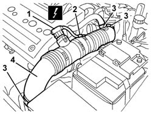
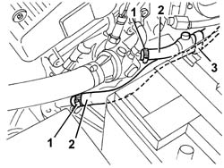
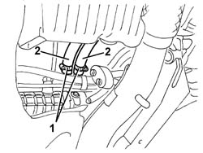

5010A08 (DUPLEX) supply and return PIPE between engine and heater - R.R.
- Path
- Procedures > 50 AUXILIARY UNITS > 5010 CLIMATE CONTROL - MISCELLANEOUS > 5010A heater pipes > 5010A08 (DUPLEX) supply and return PIPE between engine and heater - R.R.
- Kind
- repair procedure (removal / refitting; the operation number is the code)
- Applies to
- engines: 1.6 TS, 2.0 TS; all production periods
- Interactive page
- https://sloeber94.github.io/elrnDB-a147/en/#/3025383
Applies to: engines: 1.6 TS, 2.0 TS; all production periods
 Removing
Removing
 Refitting
Refitting7055B54 under-engine guard - r r
1. Working in the engine compartment, disconnect the electrical connection.
 | Name | Connector |
|---|---|---|
1 | Air flow meter |
2. Disconnect the wiring from the band.
3. Disconnect the bands fastening the pipe from the filter to the throttle casing.
4. Remove the pipe from the filter to the throttle casing.

Applies to: engines: 1.6 TS, 2.0 TS; all production periods
Position a suitable container for recovering the coolant fluid.
1. Loosen the bands retaining the duplex pipe.
2. Disconnect the duplex pipe from the connectors and left the coolant drain into a suitable container.
3. Open the retaining bands and release th duplex pipe.

Applies to: engines: 1.6 TS, 2.0 TS; all production periods
Raise the car.
1. Working underneath the engine compartment, loosen the bands retaining the duplex pipe to the heater connector.
2. Disconnect the duplex pipe from the connectors and remove it.

Applies to: engines: 1.6 TS, 2.0 TS; all production periods
Refitting
RemovingCheck that the duplex pipe is not damaged and that there are no cracks which would affect the seal.
Reposition the duplex pipe and connect it to the connects and to the retaining band.
Tighten the duplex pipe retaining bands.
Position the pipe from the filter to the throttle casing and secure it using the bands.
Secure the wiring using the band.
Connect the electrical connection.
7055B54 under-engine guard - r r
Refill the engine cooling circuit using the recommended fluid.
 | Type | Component | Name | Qty. |
|---|---|---|---|---|
- | Fluid | ENGINE COOLING CIRCUIT | Alfa Romeo Climafluid Super Permanent - 40 ˚C | - |